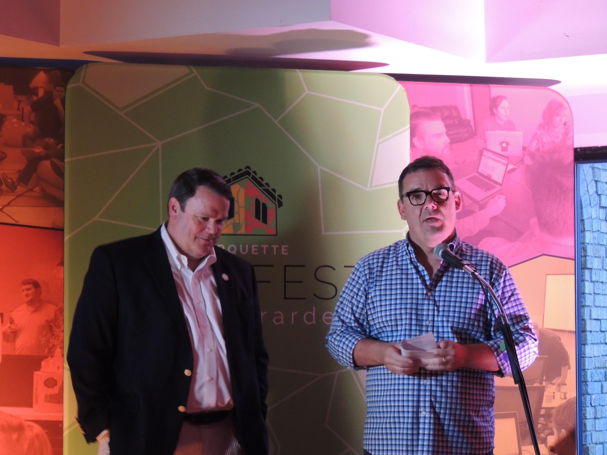

Contact with Questions:
Marquette Tech District Foundation - Dr. James Stapleton - (573) 979-2149
Delta Regional Authority - Spencer Lucker - (202) 434-4842
Marquette Tech District Foundation, Inc.
www.marquettetech.com
Cape Girardeau, Missouri (August 5, 2016) - Marquette Tech District Foundation, Inc.
The non-profit foundation responsible for extending the benefits of the Marquette Tech District to greater downtown Cape Girardeau and the southeast Missouri region is receiving a $200,000 investment to support installation of a state-of-the-art fiber optic network that will provide high-speed internet access and public wi-fi to the emerging technology district, Delta Regional Authority Federal Alternate Co-Chair Mike Marshall and Marquette Tech District Foundation, Inc. Executive Director Dr. James Stapleton announced recently.
“Cape Girardeau is an important economic and entrepreneurial hub for southeast Missouri, so we are proud to make this investment in boosting digital connectivity for students, residents, and businesses with fiber optic networking in the downtown area,” said Mike Marshall. “In order to help our communities and entrepreneurs in the Bootheel and across the Delta region compete on the global stage, increasing connectivity is an important first step.”
The announcement was made in front of an estimated 350 people attending TechFest, a gala to support the Foundation.
“The foundation is making a significant investment in the fiber optic infrastructure throughout historic downtown Cape Girardeau, Missouri,” said Dr. James Stapleton. “One of the key benefits of this investment will be free public Wi-Fi and the opportunity for small businesses to access affordable high speed internet service.”
The Marquette Tech District establishes a regional innovation hub integrated into Cape Girardeau’s historic downtown, surrounded by a regional university and its nationally-recognized River Campus and abundant cultural and entertainment assets that include an arts district, river casino, museums, and a bustling retail sector. When fully implemented, the Marquette Tech District master plan projects $25 million initial private investment for construction and business development, over 145,000 square feet of historic mixed-use renovation (coworking and tech-powered office, 3 restaurants, Marriott Courtyard hotel, and retail), a new Gigabit fiberhood and public wi-fi network, a regional workforce initiative to train more skilled computer programmers, and an increased number of tech-based startup businesses.
Based on a study conducted by the Institute for Regional Innovation and Entrepreneurship at Southeast Missouri State University, the combined first-year regional economic impact of the construction, new jobs, and new sales from the entire Tech District project are estimated in excess of $76.2 million. The ongoing annual regional economic impact of the new jobs and sales are estimated in excess of $42.5 million.
###